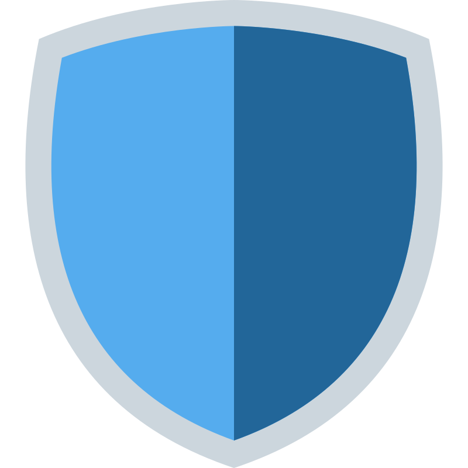
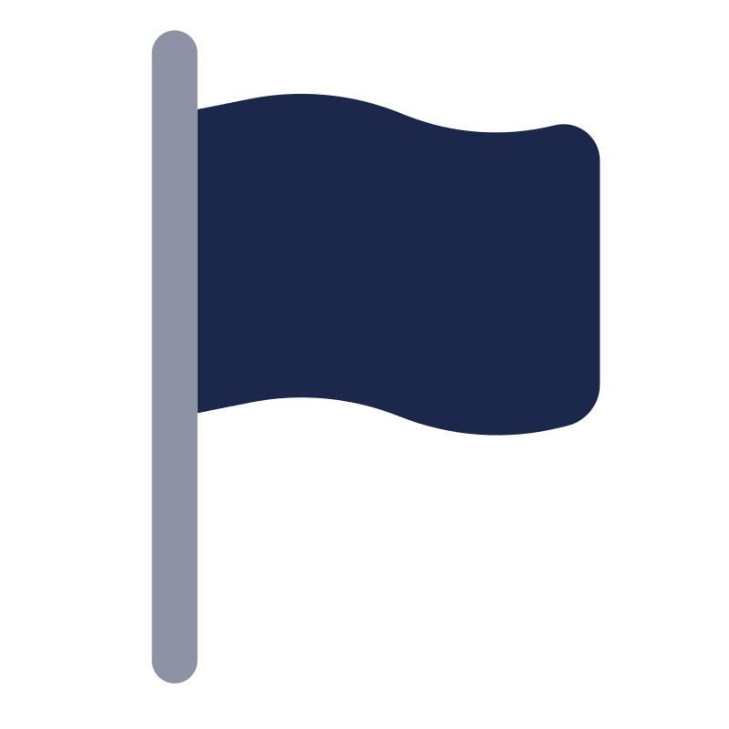

Menedżer Haseł CLI
Narzędzie konsolowe do bezpiecznego przechowywania danych z wykorzystaniem własnych struktur pamięciowych.

Nazywam się Konrad Matusik, jestem studentem cyberbezpieczeństwa. Wybrałem tą specjalność, ponieważ interesują mnie komputery, sieci komputerowe oraz technologia chmurowa. Poza tym coraz częściej w mediach pojawiają się informacje nt. kolejnych ataków cybernetycznych, co czyni tę dziedzinę coraz bardziej popularną i sugeruje jej duże pole do rozwoju. Poza cyberbezpieczeństwem interesuje mnie piłka nożna, szachy oraz inwestowanie.
Narzędzie konsolowe do bezpiecznego przechowywania danych z wykorzystaniem własnych struktur pamięciowych.

CybersecurityRaporty z audytów bezpieczeństwa aplikacji webowych oraz dokumentacja rozwiązanych wyzwań CTF.

Sieci KomputeroweWdrożenie routingu dynamicznego OSPF, redundancji bramy domyślnej oraz segmentacji VLAN w środowisku laboratoryjnym.